A professor of mine at MIT had a way of describing the whole of deep learning in a single sentence: you project things into higher dimensions to find the patterns of intelligence. Whenever you hit a wall, you don't stay and push against it — you lift the problem up, into a space with more room, where the answer was waiting all along.
It sounds like the precise opposite of last lecture, and it is. Compression squeezed things down through a narrow waist; expressivity lifts them up into a wider one. Both are true, and a good practitioner keeps both in hand: go down to find the essence, go up to find the pattern. This lecture is about the second move — and about how often a problem that looked impossible was simply being asked in too few dimensions.
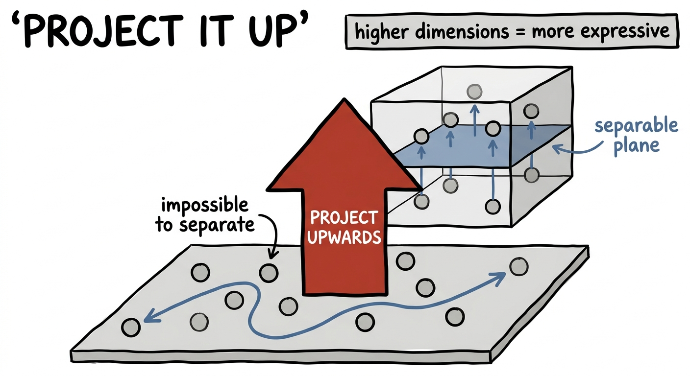
Here is the cleanest possible example. Put four points on a plane. Two of them — call them red — sit on one diagonal; the other two — gray — sit on the other. This is the famous XOR pattern, and it has a humbling property: no straight line can separate the reds from the grays. Try every angle you like; one will always end up on the wrong side. Watch:
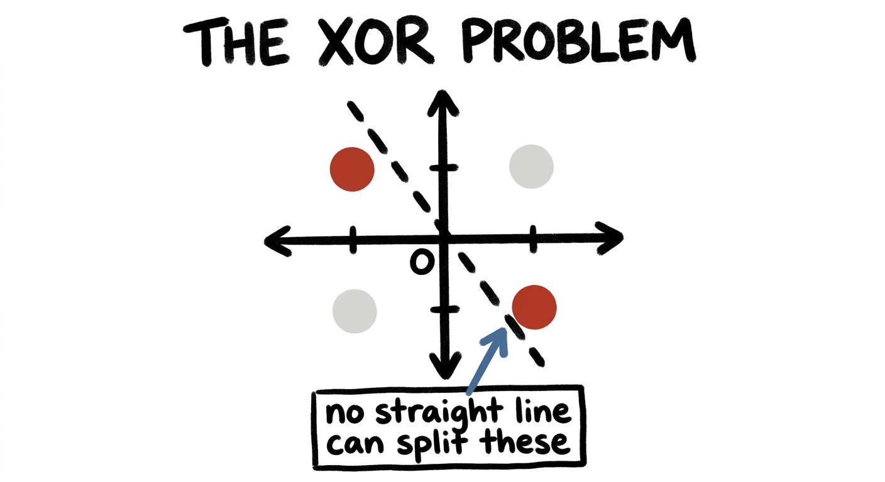
Now do the magic trick. Lift the four points off the flat page into three dimensions — give the two red points a little height, raise them up on a new axis. Suddenly the reds float above and the grays stay below, and a single flat plane slides cleanly between them. The very same data, the very same question, becomes trivially separable — just by adding a dimension.
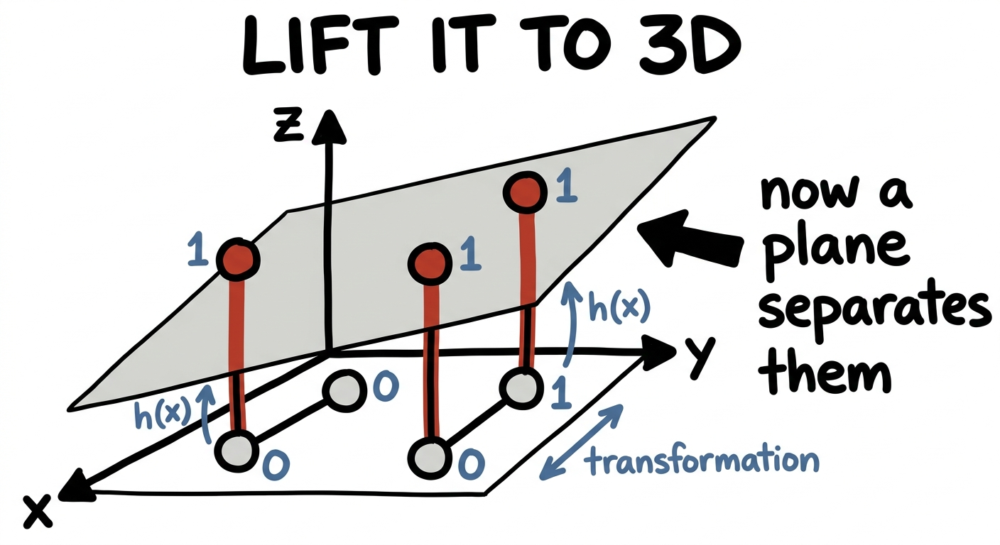
This isn't a one-off trick; it's a theorem with a name. The kernel trick behind support vector machines says: take data that's tangled in low dimensions, map it up into a much higher-dimensional space, and there it becomes linearly separable. Lift high enough and a straight boundary always exists. The first time you see it, it feels like cheating. It's just expressivity.
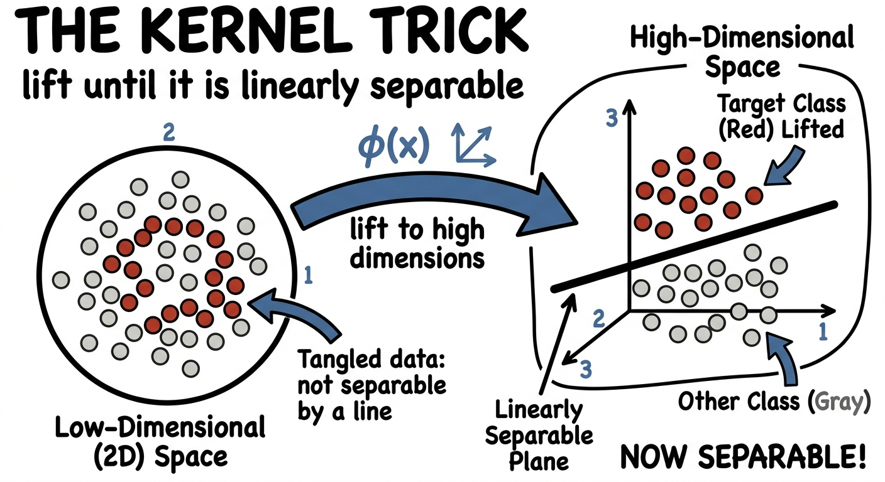
The same story plays out when you're fitting a curve instead of drawing a boundary. Suppose the truth wiggles — it rises and falls a few times. Try to fit it with something too simple and you'll fail, no matter how hard you try. A constant (degree 0) is a flat line; a straight line (degree 1) can only tilt; a parabola (degree 2) can only bow once. None of them has enough expressivity to follow a wiggle.
Add degrees — add expressive power — and the curve gains the freedom to bend as many times as it needs. Drag the slider and watch a hopeless straight line grow into a curve that finally catches the pattern:
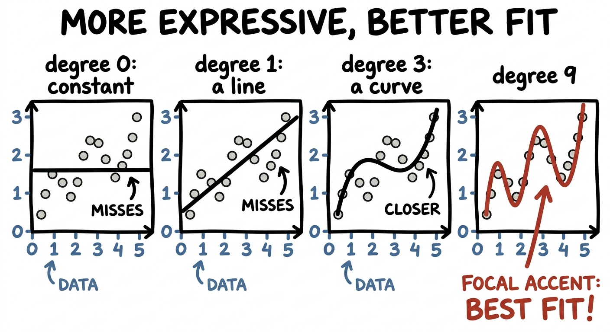
So when a model underperforms, one honest question is simply: is it expressive enough to represent the thing you're asking it to learn? Often the underlying pattern is genuinely complicated, and a richer, higher-dimensional model is exactly what it needs.
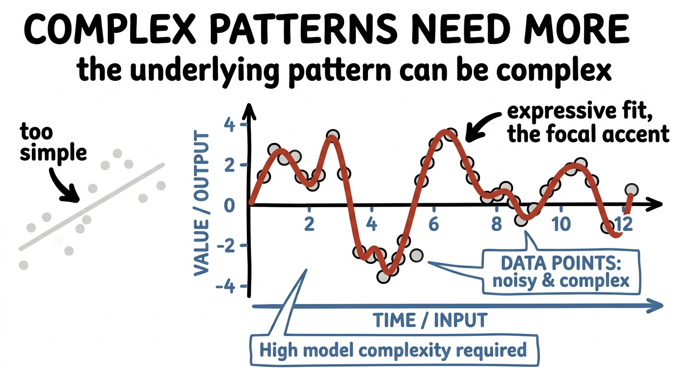
Now the grandest stage. As you scale a language model up — more and more parameters, more and more expressive capacity — something uncanny happens. Past certain sizes, abilities that were simply absent begin to appear: following instructions, doing arithmetic, reasoning in steps. We call them emergent, and a large part of why they emerge is raw expressivity: a bigger model can represent functions a smaller one literally cannot.
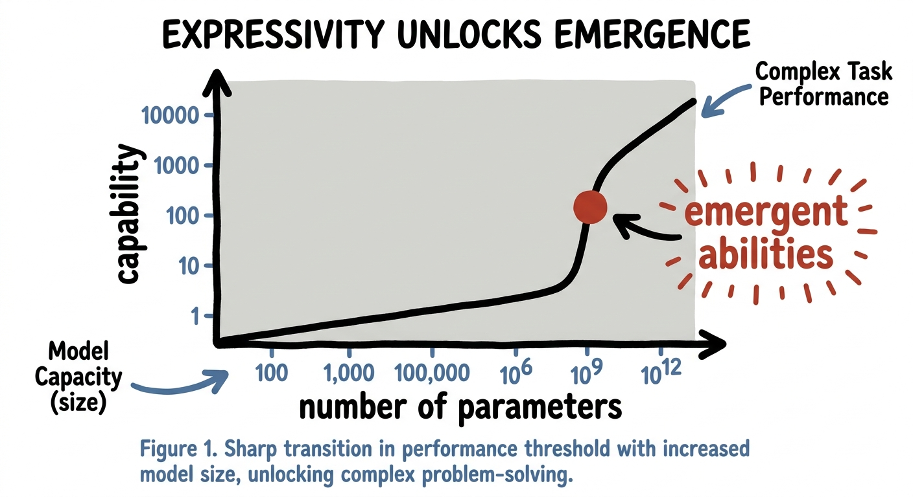
But here's the part most people skip past. Zoom inside a transformer block and you'll find two very different organs. One is attention, which mixes information between tokens — it handles context. The other, sitting right after it, is the humble feed-forward network (FFN), and it does something else entirely.
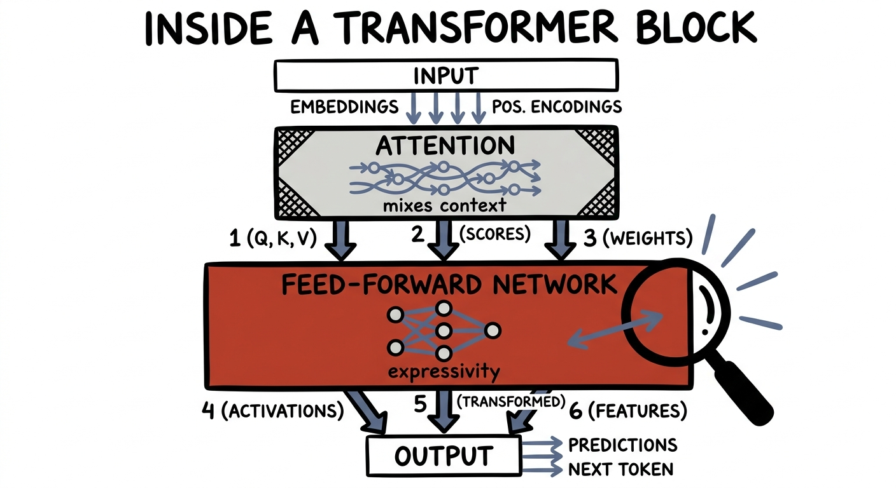
The feed-forward layer doesn't look at other tokens at all. It takes each token's vector on its own, and does exactly our move: it projects it up into a much wider space — typically about four times wider — runs a nonlinearity there, and then projects it back down. Up to be expressive, back down to fit. It is the narrow waist of compression run in reverse, and it's where a huge fraction of the model's parameters — and, the evidence suggests, much of its stored knowledge — actually live.
That last claim isn't just a nice story — interpretability work (Geva and colleagues, 2021) found that these feed-forward layers behave like key-value memories: each wide neuron quietly learns to recognise a pattern and write an associated fact. Attention moves information around; the feed-forward layer is where the model is expressive enough to hold it.
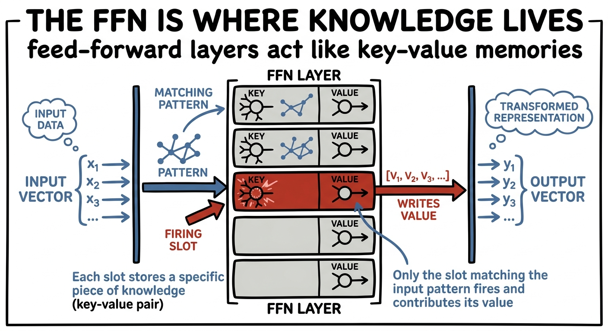
Expressivity is intoxicating, so here is the warning that keeps it honest. Go back to that degree slider and keep dragging — past the sweet spot, all the way up. The curve stops following the trend and starts chasing the noise, lunging through every single data point and flailing wildly in between. That's overfitting: a model so expressive it memorises the accidents instead of the pattern.
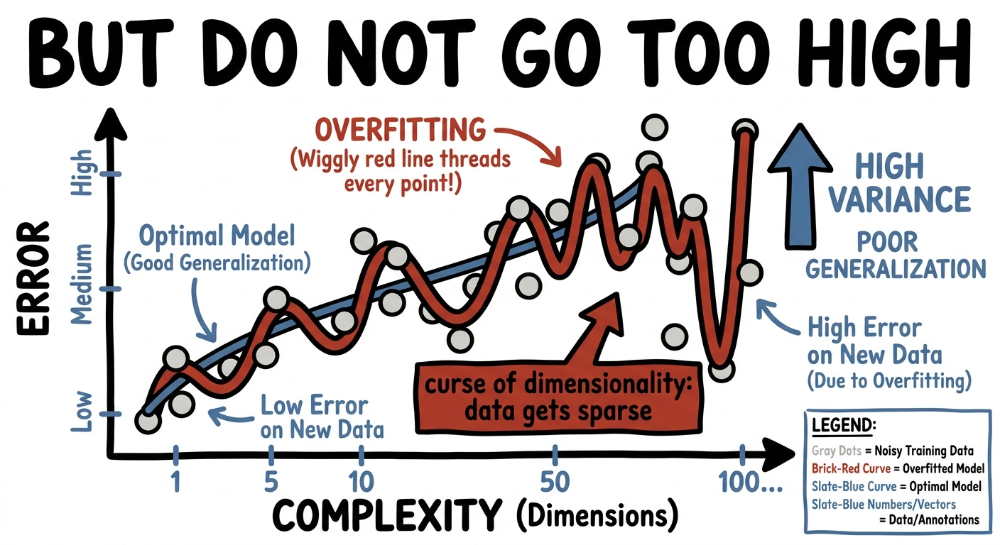
There's a deeper version too, with a wonderfully ominous name: the curse of dimensionality. As you add dimensions, space empties out — your data points scatter further and further apart, and you need exponentially more of them to fill the room. So expressivity is a dial, not a direction: too little and you can't represent the pattern; too much and you drown in space and noise. The art is the sweet spot — and that's exactly where compression's tools (regularisation, the low-rank waist) come back to rein expressivity in.
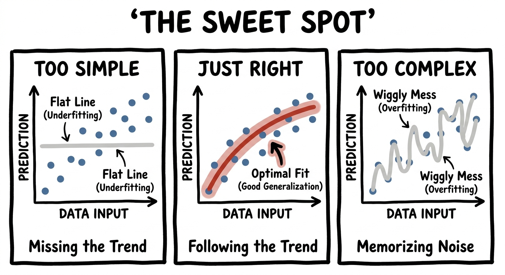
The move scales far past toy curves. A convolutional neural network takes a flat image and lifts it into a tall stack of feature maps — dozens, then hundreds, of parallel channels, each responding to a different pattern: edges, then textures, then eyes and wheels. The picture climbs into a high-dimensional space where "cat" and "dog" finally pull apart, exactly like the XOR points did.
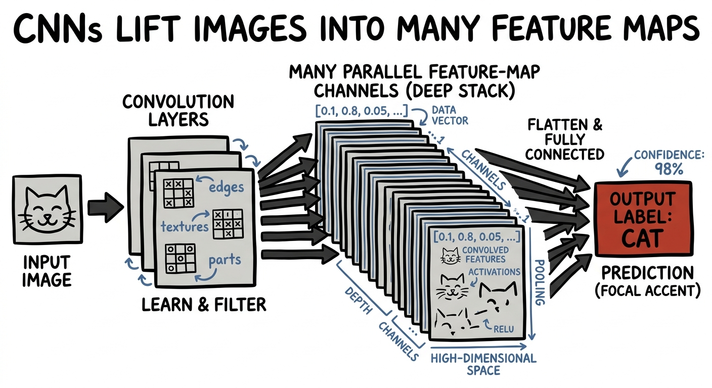
And it reaches well beyond pixels. Think of the climate — a fantastically complicated function from conditions today to weather tomorrow, far too tangled to write down by hand. A neural network, with enough expressive capacity, can approximate that function: feed it the swirling state of the atmosphere and it learns the high-dimensional mapping that classical equations struggle to solve in time. The same instinct — when the function is too complex, use something expressive enough to represent it — is now reshaping weather and climate prediction.
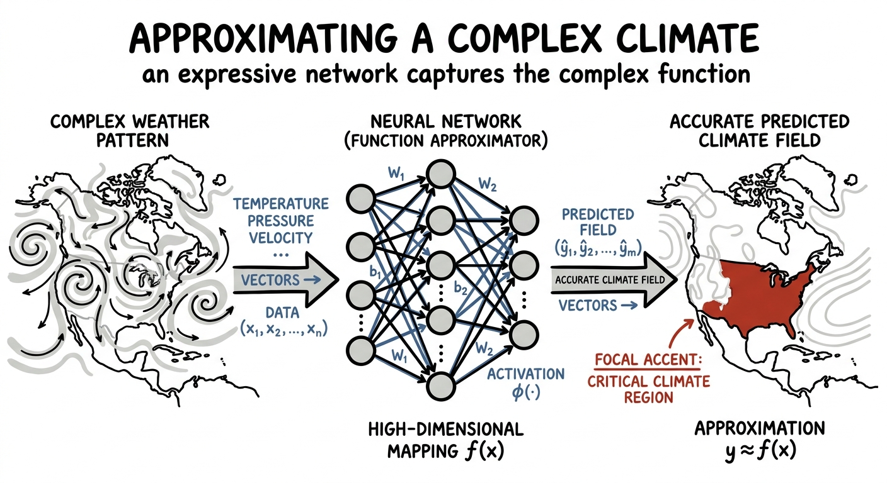
One last example, because it's a beautiful twist. When researchers tried to teach a small network to represent a detailed 3D scene — the idea behind NeRF — it came out hopelessly blurry. The network simply couldn't capture the sharp, high-frequency detail from raw (x, y, z) coordinates.
The fix was pure expressivity, applied to the input. Before the coordinates ever reach the network, lift them into a high-dimensional bouquet of sines and cosines at many frequencies — Fourier features. In that richer space the network can finally see fine detail, and the blur snaps into crisp, photographic sharpness. They didn't make the network bigger; they made the input more expressive, and that was enough.
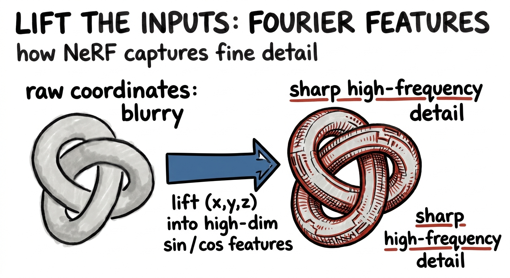
That's the whole idea, and it's a hopeful one. The next time a problem in AI looks genuinely unsolvable — points that won't separate, a curve that won't fit, a function too tangled to write — don't assume it's impossible. Assume, first, that you're asking it in too few dimensions. Lift it. Give it more room. Make it more expressive, and very often the wall you were pushing against simply isn't there anymore.
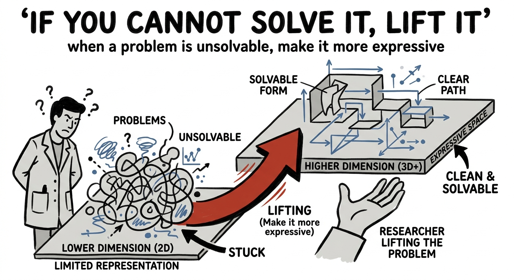
When a problem won't yield, project it into a higher dimension, where the pattern has room to appear — the XOR plane, the wiggly fit, the wide feed-forward layer, the stack of feature maps. Just remember the dial cuts both ways: lift enough to represent the truth, not so far that you drown in noise. Expressivity and compression are the two hands of the same craft.